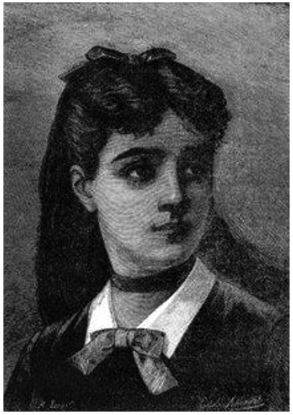
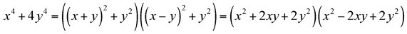
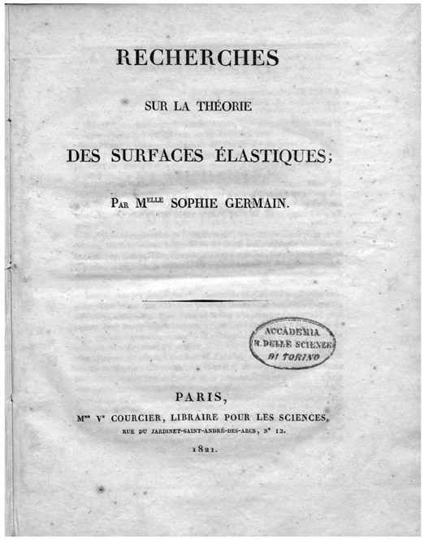
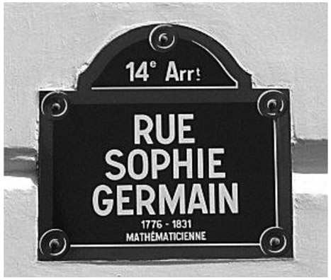

Sophie Germain: French (1776–1831)
Perhaps the most significant mathematical achievement of the twentieth century was announced in June 23, 1993, by Andrew Wiles, at a lecture in Cambridge; there, Wiles claimed to have proven Fermat’s Last Theorem, the 350-year-old claim (or conjecture) by the famous French mathematician Pierre de Fermat (see chap. 15). This made front-page news in the New York Times the next day, under the heading, “At Last, Shout of ‘Eureka!’ in Age-Old Math Mystery.”1 However, soon thereafter a slight error was detected in the proof. Over the next year, Wiles set out to correct this loophole, announcing its correction on September 19, 1994. It must be noted, though, that the technique and subject matter that Wiles used to prove Fermat’s Last Theorem was known neither during Fermat’s time nor during the ensuing centuries following his profound statement.
For centuries, mathematicians have grappled with this theorem. In the early nineteenth century, Sophie Germain produced what is believed to be one of the most significant contributions to dealing with Fermat’s Last Theorem. Before we delve into Germain’s significant contribution toward the solution of this perplexing problem, we need to understand the complex lifestyle she had to endure in order to pursue her love of mathematics.
Marie-Sophie Germain was born into a rather wealthy family on April 1, 1776, in Paris, France.2 Her father was a successful silk merchant and politician who was able to support Sophie financially throughout her entire adult life. Because one of her sisters and her mother shared the name Marie as the first part of their first names, she dropped it and became known as Sophie Germain. Germain was forced to stay home as a result of the unrest and street riots after the fall of the Bastille in 1789. Although we cannot be sure, it is commonly understood that she first encountered mathematics while reading some books in her father’s library, particularly those on the history of the subject. From there, Germain taught herself both Latin and Greek so that she could read the works of Isaac Newton and Leonhard Euler. In this effort, she faced opposition from her family members, who held that the study of mathematics was inappropriate for women. Despite that familial opposition, she secretly continued pursuing her genuine interest in mathematics. Eventually, her mother became sympathetic and chose to support Germain’s enthusiasm for mathematics.

Figure 28.1. Sophie Germain, 1790. (Illustration from Histoire du socialisme, ca. 1880.)
In 1794, the École Polytechnique was established, but it would not admit women; however, lecture notes were available to anyone who requested them. Sophie, then aged eighteen years, acquired these notes and read them intensively. She then sent her observations of them (under a pseudonym, M. LeBlanc) to the famous Italian mathematician Joseph-Louis Lagrange, who was then a member of the faculty. Lagrange was very impressed with her submissions and requested a meeting with her; at that point, she revealed that she was a woman. This did not disturb Lagrange, and he continued to mentor her at her home.
Germain’s interest specifically in number theory began in 1798, when she read the French mathematician Adrien-Marie Legendre Essai sur la théorie des nombres. Germain began corresponding with Legendre providing some brilliant ideas, which, ultimately, led him to include some of her work in his subsequent publication, Théorie des Nombres, with a citation to her for the ingenious aspect of her contribution.
Her interest in number theory was further motivated when she read the German mathematician Carl Friedrich Gauss’s monumental work Disquisitiones Arithmeticae; once again using her earlier pseudonym of M. LeBlanc, she wrote to Gauss on November 21, 1804. In this correspondence, she presented some ideas on solving Fermat’s Last Theorem. Gauss responded to her but did not comment on her work.
At this point, it would be helpful to recall the definition of Fermat’s Last Theorem, which Fermat wrote in the margin of one of his arithmetic books in 1637. Writing that the margin space was insufficiently large for him to produce the proof of this statement, Fermat claimed that for integers n > 2, the equation a n + b n = c n cannot be solved with positive integers a, b, and c.
Sophie Germain made a few discoveries in the process of trying to prove Fermat’s Last Theorem. Among them was that if a5 + b5 = c5, then at least one of the variables, a, b, or c, must be divisible by 5. Furthermore, she took a special case by letting n be any odd prime number in a n + b n + c n. She then claimed that if there exists another prime number P = 2kn + 1, where k is any positive integer not divisible by 3 such that a n + b n – c n = 0(mod P), then P divides abc, and n is not an nth power residue (mod P). Finally, she concluded that Fermat’s Last Theorem holds true for all values of n that do not divide a, b, or c. This is known as Sophie Germain’s theorem, which was a major step—especially at the time of its development—toward proving Fermat’s Last Theorem. She went ahead to show that her idea held for all odd primes n < 100. Later investigations into her work showed that it actually could be taken further, for every exponent n < 197. Germain continued to pursue a proof of this theorem in unpublished works, further motivating famous mathematicians such as Legendre and Lagrange.
Germain’s name stays prominent in number theory not only for her theorem but also because there are some numbers named after her. One example is the Sophie Germain prime numbers; a prime number p is considered a Sophie Germain prime only if 2p + 1 is also a prime number. For example, the number 3 is a Sophie Germain prime, since 3 is a prime number and 2 · 3 + 1 = 7, which is also a prime. On the other hand, the number 7 is not a Sophie Germain prime; this is because 2 · 7 + 1 = 15, which is not a prime. Her name is also found in algebra, where we have a Sophie Germain identity. This holds that for any values of x and y,

Germain continued to correspond with the most famous mathematicians of her time, one of whom, as we mentioned earlier, was Carl Friedrich Gauss. Gauss was one year younger than Germain, and because he had been corresponding with her under her pseudonym, he had assumed she was a man. During the Napoleonic wars, when Germain heard that the French were occupying Gauss’s hometown of Braunschweig, Germany, she wrote to a French army general who was a family friend, to ensure Gauss’s safety.3 When Gauss found out that his protection was sought by Sophie Germain, he was astonished to learn that all the while he was corresponding with M. LeBlanc, he had actually been in contact with a woman. Gauss then went forward to praise Germain’s genius heartily. Interestingly, Gauss and Germain never met in person.
Although Germain was most interested in mathematics and number theory, her concentration was not limited to only this field of study. She also wrote an award-winning paper on elasticity.4 Germain published her prize-winning essay, “Récherches sur la théorie des surfaces élastiques,” at her own expense in 1821 (see fig. 28.2). She did this mainly because she wanted to present her work in opposition to that of the French mathematician Siméon-Denis Poisson. Beyond mathematics, number theory, and elasticity, Sophie Germain also studied philosophy, psychology, and sociology. Much of her work was published posthumously, including her “Mémoire sur la courbure des surfaces,” a piece she wrote on elasticity, using the mean curvature in her research.

Figure 28.2.
In 1829, Germain began to suffer from breast cancer; despite the pain, she continued to pursue her work feverishly, publishing papers until her death, on June 27, 1831.5 Germain died in the house where she lived her entire life—the house that today bears her name—at 13 rue de Savoie. She was further honored posthumously, by Gauss when he indicated that the University of Göttingen should have bestowed an honorary degree upon her. However, this was six years after her death. Essentially, Germain’s life story is that of a woman of means who did not allow her gender to stop her from pursuing mathematics and scientific research, despite the opposition from her family and culture on account of her sex.

Figure 28.3.
Although she was not widely recognized for her brilliance during her own lifetime, Sophie Germain has had many honors bestowed upon her since her death in 1831. A street in Paris, Rue Sophie Germain, carries her name (see fig. 28.3), and a statue of her stands in the courtyard of the Paris school that also bears her name: École Sophie Germain. As was mentioned above, the house at 13 rue de Savoie is named for her, and it has been designated as a historical landmark. Furthermore, the Sophie Germain Hotel is located at 12 Rue Sophie Germain. On account of not only these physical landmarks and locations but also the Prix Sophie Germain, a mathematics prize that is offered annually by the Paris Academy of Sciences, this female polymath remains in the public eye today.